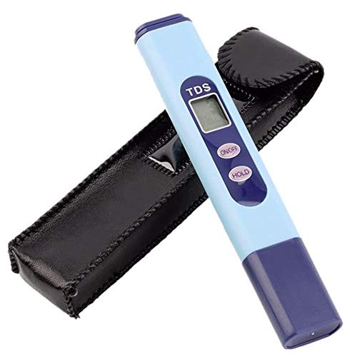
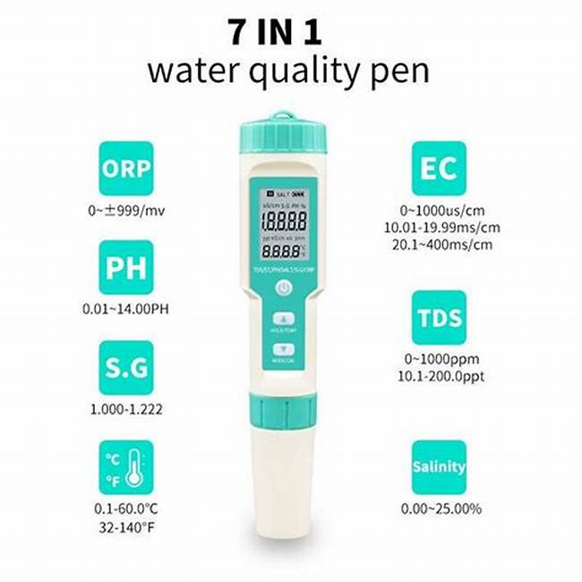
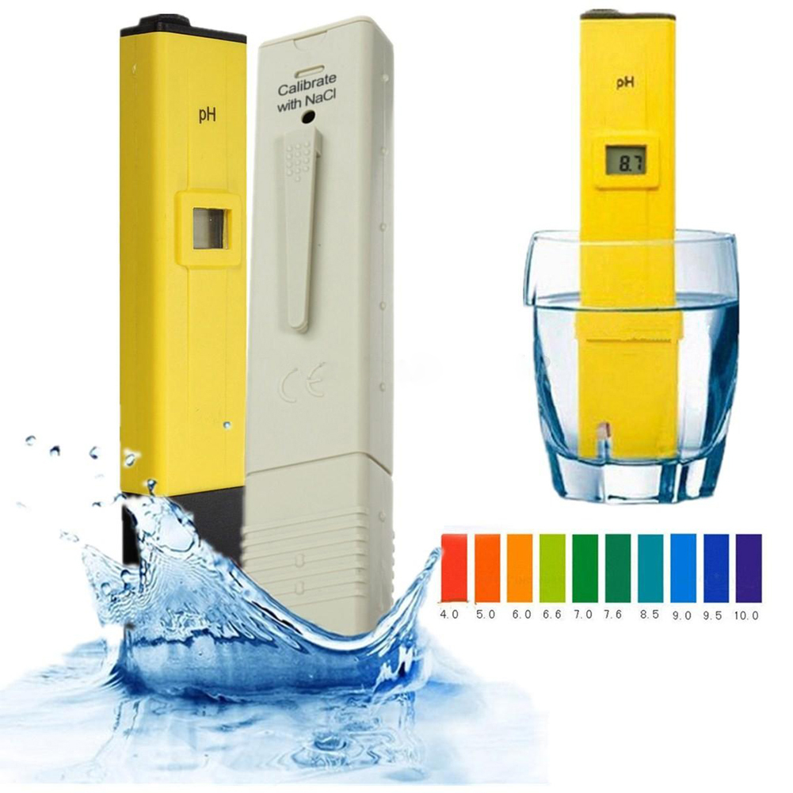

Our Products:
Our expertise in the water testing products are really impressive.Our main thing is our cutting edge sensors that are embedded in the products.We have engineered several important products to check the water quality, and that can be bought my common public.
This products are in only implementable in th future.We at present only focus on the buliding of the iot based sensor ,which would be implemented later on this products.
Our sensor-embedded devices include:
PS:These products are only samples inspired from different brands, we urged to implement these kinds of products with our own sensor technology, which would be cost effective and more efficient.
Analog Water Tester.
Product 1
It is a well equipped device, to test water purity and show digitally.To use it you need only a sample of water.Put the cap head on the sample, and it will show results.
Water Testing pen.
Product 2
It is more advance, and checks water purity with its more distinct features.It is multi-sensored enabled.Ii can use in vast varity of samples.
Water pH Tester.
Product 3
It is a remarkable product to check the pH of a sample.It is beneficial in checking the pH levels of pond, river,lakes,etc.Where the measuring of pH is in concern
Shock Proof Sensors.

Product 4
These are carbon sesnors act as water purity indicators and controller.Thus it can provide information about water purity and improve water quality.It is quite popular nowadays and can be used over various water bodies.